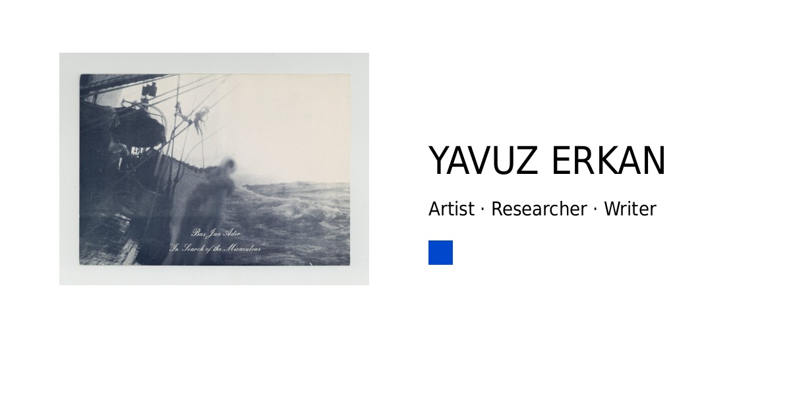

a photograph
2017FERRISITA blood tonic
kidney stone(s) of a mother
home-grown K3[Fe(CN)6] (Potassium Ferricyanide) single crystal(s)
popping candy (orange flavoured)
distilled water (Reagent grade)
broken piece(s) of a brown glass bottle
fragment(s) from the second last page of G. Bataille’s Visions of Excess
glass (chemical) pusher
handle of a black plastic bag
household bleach
apple vinegar
light (source)
At a single glance, mankind is devoted to deliberating what is visibly resonant in space. It matters very little what one (dis)regards on a dwarfed planar surface. Beguiled by the supplies of skyblueseas, the human eye is blind(ed). Towards the sun, a photograph is open to exposing bottomless pits from within all proportionately transparent face(t)s!
Discomposed around liquid forms of intelligence and in loving memory of AA, a photograph is a fortuitous, formless gut reaction. As an archaic, alternative/non-silver form of photography, it is experimentally sampled from the cyanotype process.
A blue monochrome is pinned to an off-white wall of palimpsest. Singlehandedly, this ‘cabinet card’ is not just a historical product of photography. Today, the marks of its indifference are about everything instantly photographic.
As a part of and apart from a photograph, an ensemble of make-believe corporealities and stuttering appearances promiscuously hovers above a supermassive black hole. Paper soaks up the excess of confocal light, blood tonic copulates with vinegar, a monocrystalline solid mass bursts out like a killjoy, shards of glass prick the injuries of candied tumuli, still water bleaches the plastic, kidney stones push and pull traces of chemical dust, and so on.

the photographs of a photograph
shot on FUJICHROME PROVIA 100F


colony, 23 December 2017 – 3 February 2018
Abud Efendi Konağı, Istanbul
Curated by Kevser Güler, Derya Bayraktaroğlu, and Aylime Aslı Demir
Artists and participants: Yavuz Erkan, Ursula Mayer, Nilbar Güreş, Erinç Seymen & Uğur Engin Deniz, Daria Martin, Gökçe Yiğitel, Mary Maggic, İris Ergül, Katja Novitskova, Furkan Öztekin, Dynasty Handbag, Aykan Safoğlu, İz Öztat & Zişan, Kerem Ozan Bayraktar, Mariah Garnett, Umut Yıldırım, Yasemin Nur, and Let the Good Times Roll

colony, 9 March – 15 April 2018
Schwules Museum, Berlin
Curated by Derya Bayraktaroğlu and Aylime Aslı Demir